Introduction
This vignette demonstrates a complex, real-world application of ABC to infer key epidemiological parameters from early outbreak data. Specifically, we aim to estimate the basic reproduction number (R0) and the generation time distribution using only linked case data that includes symptom onset times and observation delays.
During the early stages of an outbreak, detailed information like who infected whom (a “transmission tree”) is often incomplete or unknown. However, if we can observe some linked transmission pairs (e.g., through contact tracing), we can use the times between symptom onsets in these pairs—the serial interval—to learn about the underlying generation time (the time between infection in a primary case and infection in a secondary case).
This is a challenging inference problem because: 1. Infection
times are hidden: We only observe symptom onset and reporting
times, which are delayed and stochastic. 2. Observation is
biased: Cases are only observed if their symptom onset and
reporting happen within the observation window. This “right-censoring”
distorts the observed distributions. 3. Parameters are
linked: R0 is mathematically related to the growth rate
(r0) and the generation time distribution via the
Wallinga-Lipsitch equation.
tidyabc provides a flexible framework to build a
simulation model that captures this complexity and then use ABC to infer
the hidden parameters.
Simulation: Generating “Observed” Data
We begin by simulating a realistic outbreak using the
ggoutbreak package to create a synthetic “ground truth”
dataset.
Simulation Setup
We define the true epidemiological parameters: - Generation
time: Mean = 4 days, SD = 2 days (a relatively short time
between infections). - R0: 2.0 (each case infects 2
others on average). - Initial cases (I0):
10. - Symptom and observation process: Only 30% of
infected individuals become symptomatic. Symptom onset is delayed from
infection by a gamma-distributed time (Mean=7, SD=5). Of those
symptomatic, 70% are eventually detected, with a further
gamma-distributed delay to observation (Mean=5, SD=3). -
Observation window: We only observe cases whose symptom
onset and observation occur before day 40 (T_obs = 40).
Running the Simulation
sim_params = list(
# A short generation time
mean_gt = 4,
sd_gt = 2,
R0 = 2,
I0 = 10,
# Add a longish and very variable delay to symptoms
p_symptomatic = 0.3,
mean_onset = 7,
sd_onset = 5,
# and a slightly shorter delay to observation:
# Only symptomatic cases are observed
p_detected_given_symptoms = 0.7,
mean_obs = 5,
sd_obs = 3,
# Observation cutoff:
T_obs = 40
)
# Run simulation ----
sim_ip = ggoutbreak::make_gamma_ip(
median_of_mean = sim_params$mean_gt,
median_of_sd = sim_params$sd_gt
)
sim_params$r0 = ggoutbreak::inv_wallinga_lipsitch(sim_params$R0, sim_ip)
truth = ggoutbreak::sim_branching_process(
fn_Rt = ~ sim_params$R0,
fn_ip = ~sim_ip,
fn_imports = \(t) ifelse(t == 1, sim_params$I0, 0),
max_time = 40,
seed = 123
)## ...................complete
## interfacer: development mode active (local function).
delayed = truth %>%
ggoutbreak::sim_delay(
p_fn = ~ sim_params$p_symptomatic,
delay_fn = ~ ggoutbreak::rgamma2(
.x,
sim_params$mean_onset,
sim_params$sd_onset
),
input = "time",
output = "symptom"
) %>%
ggoutbreak::sim_delay(
p_fn = \(t, symptom) {
ifelse(symptom, sim_params$p_detected_given_symptoms, 0)
},
delay_fn = ~ ggoutbreak::rgamma2(
.x,
sim_params$mean_obs,
sim_params$sd_obs
),
input = "symptom_time",
output = "observation"
)
observed = delayed %>% dplyr::filter(observation_time < sim_params$T)
traced_contacts = observed %>%
dplyr::semi_join(observed, by = c("infector" = "id"))-
Branching Process: The core outbreak is simulated
as a stochastic branching process with a constant
R0of 2.0 and the specified generation time distribution (sim_ip). -
Adding Delays: We then layer on the complexities of
real-world observation:
-
sim_delay(..., output = "symptom")adds the symptom onset delay. -
sim_delay(..., output = "observation")adds the delay from symptom onset to being recorded in the dataset.
-
-
Observation and Tracing: We filter the data to only
include cases observed before
T_obs=40and then identify a subset of traced transmission pairs (where both the infector and the infected are observed and linked).
The Observed Data
From this simulated outbreak, we extract three key pieces of
information to use as our obsdata for ABC:
- Primary Case Onset Times:
index_case_onset = observed %>% dplyr::transmute(onset_time = floor(symptom_time))
ggplot(index_case_onset, aes(x=onset_time))+geom_histogram(binwidth = 1)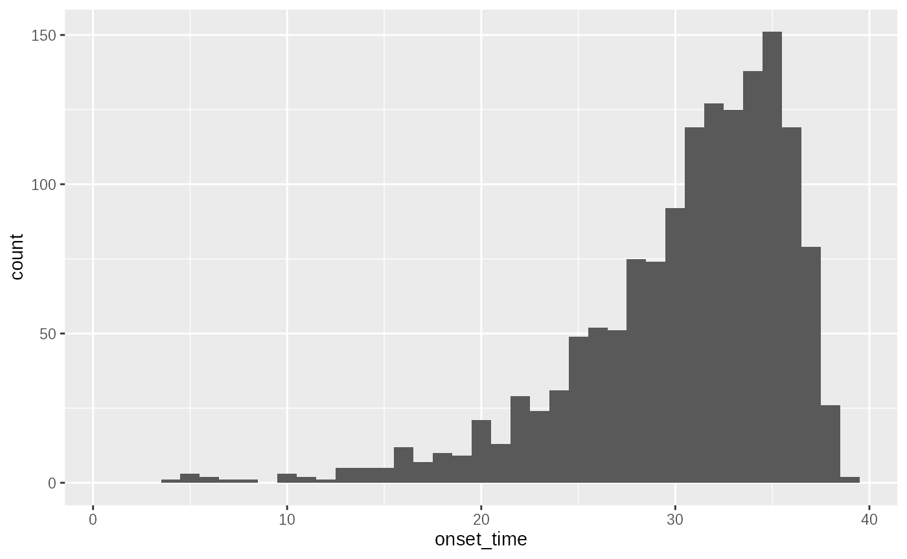
This histogram shows the distribution of symptom onset times for all observed primary cases. The shape is influenced by the exponential growth rate of the outbreak, the symptom onset delay distribution, and the delay to observation.
Delay to observation
# Data
delay_distribution = observed %>% dplyr::transmute(
obs_delay = floor(observation_time) - floor(symptom_time)
)
ggplot(delay_distribution, aes(x = obs_delay))+geom_histogram(binwidth = 1)+
xlab("symptom to observation")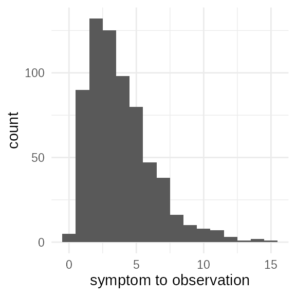
This shows the distribution of delays between symptom onset and when
the case was observed. This reflects the mean_obs and
sd_obs parameters. In an exponentially growing outbreak
longer delays to observation may be be fully represented due to right
censoring.
Observed serial interval
serial_pairs = observed %>%
inner_join(
traced_contacts,
by = c("id" = "infector"),
suffix = c(".1", ".2")
) %>%
transmute(
serial_interval = floor(symptom_time.2) - floor(symptom_time.1) #order known
# serial_interval = abs(floor(symptom_time.2) - floor(symptom_time.1)) #order uncertain
)
ggplot(serial_pairs) +
geom_histogram(aes(x = serial_interval), binwidth = 1)+
xlab("symptom serial interval (given observed)")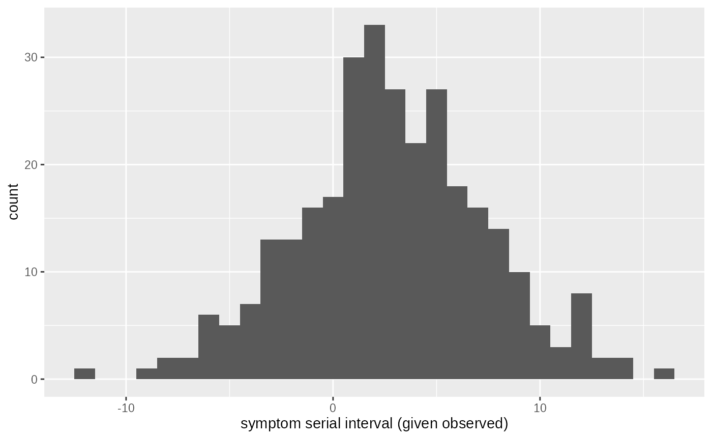
This is the most critical piece of data. The serial interval is the time between symptom onsets in observed transmission pairs. Because symptom onset is itself delayed from infection, the serial interval is a noisy and potentially biased proxy for the true generation time. Our model must account for this relationship. Longer serial intervals are not as frequently observed in the context of exponential growth as long intervals between cases are less likely to have been observed yet.
obsdata = list(
onset = as.numeric(index_case_onset$onset_time),
diff = as.numeric(delay_distribution$obs_delay),
si = as.numeric(serial_pairs$serial_interval)
)The Inference Model
Our goal is to fit a model that can simultaneously explain all three observed data components. The model makes explicit assumptions about the hidden processes:
Model Assumptions
-
Transmission Dynamics: Infection times follow a
process of constant exponential growth with rate
r0. -
Delays:
- Time from infection to symptom onset is
Gamma-distributed (
mean_onset,sd_onset). - Time from symptom onset to observation is
Gamma-distributed (
mean_obs,sd_obs). - The true generation time (time between infections
in a pair) is Gamma-distributed (
mean_gt,sd_gt).
- Time from infection to symptom onset is
Gamma-distributed (
\[ \begin{align} t_{max} - T_{inf} &\sim Exp(r_0) \\ \Delta T_{inf \rightarrow onset} &\sim Gamma(\mu_{onset},\sigma_{onset}) \\ \Delta T_{onset \rightarrow obs} &\sim Gamma(\mu_{obs},\sigma_{obs}) \\ \Delta T_{gt} &\sim Gamma(\mu_{gt},\sigma_{gt}) \\ \end{align} \]
Delays are linked together like this:
\[ \begin{align} T_{onset} &= T_{inf} + \Delta T_{inf \rightarrow onset} \\ T_{obs} &= T_{onset} + \Delta T_{onset \rightarrow obs}\\ T_{inf_2} &= T_{inf_1} + \Delta T_{gt} \\ \Delta T_{onset_1 \rightarrow onset_2} &= \Delta T_{gt} + \Delta T_{inf_2 \rightarrow onset_2} - \Delta T_{inf_1 \rightarrow onset_1} \\ \end{align} \]
-
Observation Process: A case is only “observed” if
its symptom onset is after day 0 and its observation time is before
T_obs.
\[ \begin{align} O_1 &= I(t_0 \le T_{onset_1}, T_{obs_1} \le t_{max}) \\ O_{1,2} &= I(O_1, t_0 \le T_{onset_2}, T_{obs_2} \le t_{max})\\ T_{onset_1}|O_1 &\Rightarrow \text{primary case times}\\ \Delta T_{onset_1 \rightarrow obs_1}|O_1 &\Rightarrow \text{onset to interview delay}\\ \Delta T_{onset_1 \rightarrow onset_2}|O_{1,2} &\Rightarrow \text{onset to onset serial interval}\\ \end{align} \]
-
Parameter Linkage: The basic reproduction number
R0 is not a free parameter. It is determined by
r0and the generation time distribution through the Wallinga-Lipsitch formula, specific for gamma distributed generation times:
\[ \begin{align} R_0 = (1 + \frac{r_0\sigma_{gt}^2}{\mu_{gt}})^{\frac{\mu_{gt}^2}{\sigma_{gt}^2}} \end{align} \]
The Simulation Function (sim1_fn)
The mathematical formulation of the model is implemented below,
showing how the hidden infection times (T_inf) are used to
generate the observed symptom times (T_onset), observation
times (T_obs), and serial intervals (derived from linked
pairs).
This function is fully self contained and using
carrier::crate to bind the observation window
T_obs and the number of primary cases n from
the observed data.
n = nrow(observed)
sim1_fn = carrier::crate(
function(r0, mean_onset, sd_onset, mean_obs, sd_obs, mean_gt, sd_gt, R0, ...) {
# Primary case infection time
# exponentially distributed in time. Need to make sure we have enough samples
# before t0 observation cutoff to account for early observed cases.
t_early = - stats::qgamma(0.99,mean_onset,sd_onset) # t starts at 0
t_inf_1 = tidyabc::rexpgrowth(n, r0, T_obs, t_early)
onset_delay = tidyabc::rgamma2(n, mean_onset, sd_onset)
obs_delay = tidyabc::rgamma2(n, mean_obs, sd_obs)
t_onset_1 = t_inf_1 + onset_delay
t_obs_1 = t_onset_1 + obs_delay
# Primary case observations:
# Onset after t0 and observed before T
obs_1 = t_obs_1 < T_obs & t_onset_1 > 0
t_inf_1 = t_inf_1[obs_1]
t_onset_1 = t_onset_1[obs_1]
t_obs_1 = t_obs_1[obs_1]
n1 = length(t_inf_1)
# Secondary case. Numbers of secondary cases are poission(R0). Could add
# dispersion here and fit it also
# Only observed primary will be observed secondary so we can restrict to
# observed subset
# browser()
case_2ary = stats::rpois(n1,R0)
index_1ary = rep(seq_along(case_2ary), case_2ary)
n2 = length(index_1ary)
gt_delay = tidyabc::rgamma2(n2, mean_gt, sd_gt)
onset_delay_2 = tidyabc::rgamma2(n2, mean_onset, sd_onset)
obs_delay_2 = tidyabc::rgamma2(n2, mean_obs, sd_obs)
t_inf_2 = t_inf_1[index_1ary] + gt_delay
t_onset_2 = t_inf_2 + onset_delay_2
t_obs_2 = t_onset_2 + obs_delay_2
# order dependent
serial_interval = floor(t_onset_2) - floor(t_onset_1[index_1ary])
# order independent
# serial_interval = abs(floor(t_onset_2) - floor(t_onset_1[index_1ary]))
# Secondary case observations
obs_2 = t_obs_2 < T_obs & t_onset_2 > 0
serial_interval = serial_interval[obs_2]
t_onset_2 = t_onset_2[obs_2]
return(list(
onset = floor(t_onset_1),
diff = floor(t_obs_1) - floor(t_onset_1),
si = serial_interval
))
},
T_obs = sim_params$T_obs,
n=n
)It performs the following steps: 1. Simulate Primary
Infections: Generates n primary infection times
from an exponentially growing process, starting early enough to account
for long symptom delays. 2. Add Delays for Primary
Cases: Adds symptom onset and observation delays, then applies
the observation filter. 3. Simulate Secondary
Infections: For each observed primary case, it generates a
Poisson(R0) number of secondary cases. 4. Add
Delays for Secondary Cases: Adds their own generation time
delay, symptom onset delay, and observation delay. 5. Calculate
Observed Quantities: Computes the final vectors for
onset, diff (observation delay), and
si (serial interval) from the simulated and filtered
data.
The Scoring Function (scorer1_fn)
The scorer function compares the simulated output to the observed data using the Wasserstein distance, which is well-suited for comparing distributions of event times. It also uses the mean absolute difference between simulated and observed data, to give some more information about the most important aspect of the serial interval distribution.
scorer1_fn = function(simdata, obsdata) {
onset = calculate_wasserstein(simdata$onset, obsdata$onset)
diff = calculate_wasserstein(simdata$diff, obsdata$diff)
si = calculate_wasserstein(simdata$si, obsdata$si)
mad_si = abs(mean(simdata$si) - mean(obsdata$si))
return(list(
sim_onset = onset,
sim_diff = diff,
sim_si=si,
sim_mad_si = mad_si
))
}It returns a list of four components: - sim_onset,
sim_diff, sim_si: Wasserstein distances for
the three main data components. - sim_mad_si: The absolute
difference in the mean serial interval. This provides
an additional, direct constraint on the central tendency of the serial
interval, complementing the distributional comparison from the
Wasserstein distance.
We test the sim_fn and scorer_fn pair to
ensure they work correctly with the observed data.
test = tidyabc::test_simulation(
sim_fn = sim1_fn,
scorer_fn = scorer1_fn,
params = sim_params,
obsdata = obsdata
# debug=TRUE
)
# .gg_hist(test$obsdata$onset)Inference with ABC
We now perform ABC to infer the true parameters from the
obsdata.
Priors
We specify priors for the model parameters. The priors for the gamma
distribution hyper-parameters (mean_*, sd_*)
are constrained to be “convex” (mean > sd), ensuring the
distributions have a single mode, which is a reasonable assumption for
biological delays. The prior for r0 is set to allow for
growth rates consistent with the observation window. The R0
parameter is not given a prior; it is a deterministic
function of r0, mean_gt, and
sd_gt.
priors = priors(
r0 ~ unif(-0.1, 0.7),
mean_onset ~ unif(0, 12),
sd_onset ~ unif(0, 8),
mean_obs ~ unif(0, 12),
sd_obs ~ unif(0, 8),
mean_gt ~ unif(0, 12),
sd_gt ~ unif(0, 8),
R0 ~ (1+r0*sd_gt^2/mean_gt) ^ (mean_gt^2 / sd_gt^2),
~ is.finite(R0) & R0 > 0,
~ mean_onset > sd_onset,
~ mean_obs > sd_obs,
~ mean_gt > sd_gt
)
priors## Parameters:
## * r0: unif(min = -0.1, max = 0.7)
## * mean_onset: unif(min = 0, max = 12)
## * sd_onset: unif(min = 0, max = 8)
## * mean_obs: unif(min = 0, max = 12)
## * sd_obs: unif(min = 0, max = 8)
## * mean_gt: unif(min = 0, max = 12)
## * sd_gt: unif(min = 0, max = 8)
## Constraints:
## * is.finite(R0) & R0 > 0
## * mean_onset > sd_onset
## * mean_obs > sd_obs
## * mean_gt > sd_gt
## Derived values:
## * R0 = (1 + r0 * sd_gt^2/mean_gt)^(mean_gt^2/sd_gt^2)ABC Workflow
We run a multi-stage ABC workflow:
-
Initial Rejection Sampling
(
abc_rejection):
- We perform a quick, low-resolution rejection fit with
n_sims=1000andacceptance_rate=0.5. - The primary goal is not to get the final answer,
but to analyze the resulting component scores using
posterior_distance_metrics(). This helps us calibrate thescoreweightsto ensure the serial interval (sim_si,sim_mad_si) has a strong influence on the distance calculation, as it is the most informative data for inferring the generation time and R0.
abc_fit = abc_rejection(
obsdata = obsdata,
priors_list = priors,
sim_fn = sim1_fn,
scorer_fn = scorer1_fn,
n_sims = 1000,
acceptance_rate = 0.5,
parallel = TRUE
)## ABC rejection, 1 wave.
# summary(abc_fit)
metrics = posterior_distance_metrics(abc_fit)
# make the serial interval fitting much more important:
scoreweights1 = metrics$scoreweights -
Sequential Monte Carlo (
abc_smc):
- Using the calibrated
scoreweights, we run a more efficient SMC fit withn_sims=8000. - SMC iteratively refines the proposal distribution, allowing it to home in on the high-posterior-density region more effectively than rejection sampling.
smc_fit = abc_smc(
obsdata = obsdata,
priors_list = priors,
sim_fn = sim1_fn,
scorer_fn = scorer1_fn,
n_sims = 8000,
acceptance_rate = 0.25,
#debug_errors = TRUE,
parallel = TRUE,
scoreweights = scoreweights1
)## ABC-SMC## SMC waves: ■ 1% | wave 1 ETA: 6m## SMC waves: ■ 2% | wave 2 ETA: 5m## SMC waves: ■■ 3% | wave 3 ETA: 5m## SMC waves: ■■ 4% | wave 4 ETA: 5m## SMC waves: ■■ 5% | wave 5 ETA: 5m## SMC waves: ■■■ 6% | wave 6 ETA: 5m## SMC waves: ■■■ 7% | wave 7 ETA: 5m## SMC waves: ■■■ 8% | wave 8 ETA: 5m## SMC waves: ■■■■ 9% | wave 9 ETA: 5m## SMC waves: ■■■■ 10% | wave 10 ETA: 5m## SMC waves: ■■■■ 11% | wave 11 ETA: 4m## SMC waves: ■■■■■ 12% | wave 12 ETA: 4m## SMC waves: ■■■■■ 13% | wave 13 ETA: 4m## SMC waves: ■■■■■ 14% | wave 14 ETA: 4m## SMC waves: ■■■■■■ 15% | wave 15 ETA: 4m## SMC waves: ■■■■■■ 16% | wave 16 ETA: 4m## SMC waves: ■■■■■■ 18% | wave 17 ETA: 4m## SMC waves: ■■■■■■■ 19% | wave 18 ETA: 4m## SMC waves: ■■■■■■■ 20% | wave 19 ETA: 4m## SMC waves: ■■■■■■■ 21% | wave 20 ETA: 4m## SMC waves: ■■■■■■■■ 22% | wave 21 ETA: 4m## SMC waves: ■■■■■■■■ 23% | wave 22 ETA: 4m## Converged on wave: 23
summary(smc_fit)## ABC SMC fit: 23 waves - (converged)
## Parameter estimates:
## # A tibble: 8 × 4
## # Groups: param [8]
## param mean_sd median_95_CrI ESS
## <chr> <chr> <chr> <dbl>
## 1 R0 1.789 ± 0.176 1.770 [1.475 — 2.164] 1919.
## 2 mean_gt 3.594 ± 0.804 3.497 [1.958 — 6.459] 1919.
## 3 mean_obs 5.320 ± 0.464 5.287 [4.275 — 6.953] 1919.
## 4 mean_onset 5.188 ± 1.183 5.111 [2.687 — 8.860] 1919.
## 5 r0 0.195 ± 0.014 0.194 [0.159 — 0.235] 1919.
## 6 sd_gt 2.764 ± 1.124 2.742 [0.501 — 6.023] 1919.
## 7 sd_obs 3.195 ± 0.489 3.145 [2.196 — 4.960] 1919.
## 8 sd_onset 3.747 ± 0.944 3.629 [1.854 — 6.437] 1919.This is generally quite slow for the relative large number of waves and simulations it requires until convergence. It has good matching between the estimated parameters and the truth for initial growth rate, reproduction number and observation delays. It is uninformed about delay to onset (and this is inherent in the model and data), and the generation time is somewhat constrained and the mode aligns with the true value but the median is still somewhat high.
plot(smc_fit,truth = sim_params)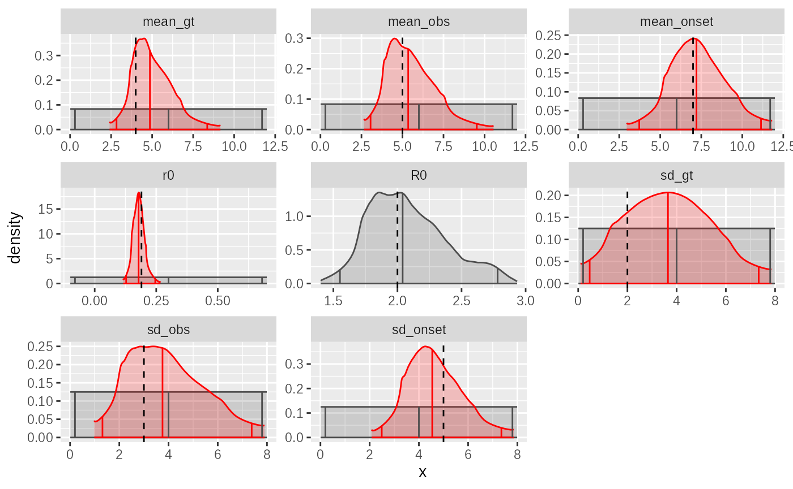
plot_evolution(smc_fit,truth = sim_params)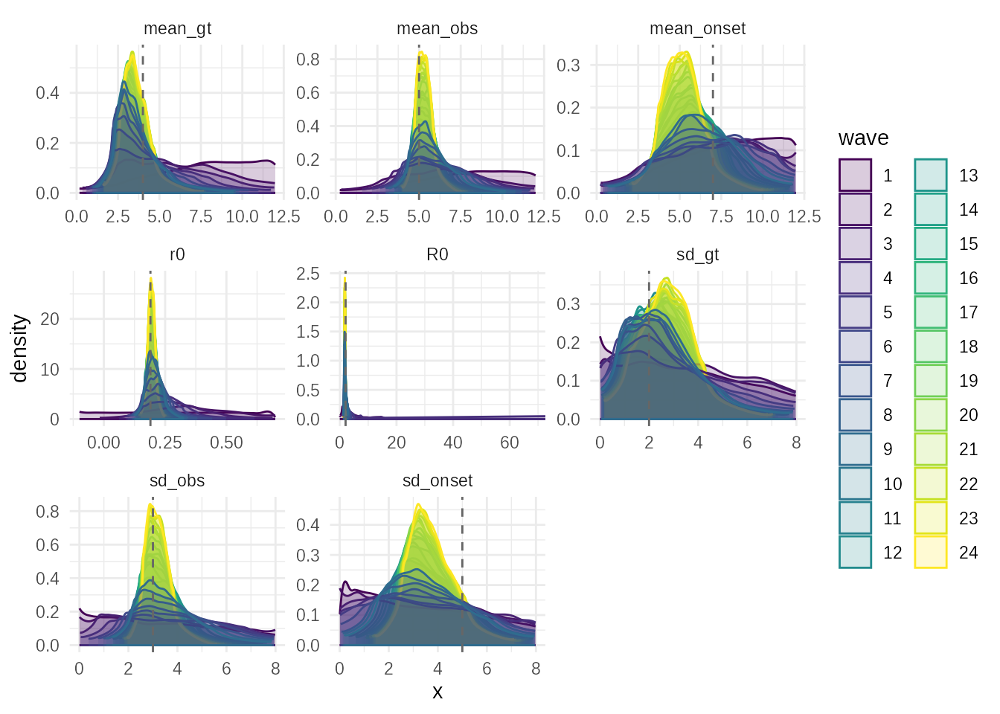
-
Adaptive ABC (
abc_adaptive):
- Finally, we run the Adaptive ABC algorithm. This method fits empirical distributions to the posterior from each wave to create the next proposal, which can be very effective for complex, non-Gaussian posteriors.
- We use
widen_by = 1.2to provide a safety net against particle degeneracy.
adaptive_fit = abc_adaptive(
obsdata = obsdata,
priors_list = priors,
sim_fn = sim1_fn,
scorer_fn = scorer1_fn,
n_sims = 4000,
acceptance_rate = 0.2,
# debug_errors = TRUE,
parallel = TRUE,
scoreweights = scoreweights1,
widen_by = 1.2
)## ABC-Adaptive## Adaptive waves: ■ 0% | wave 1 ETA: 6m## Adaptive waves: ■ 2% | wave 4 ETA: 5m## Adaptive waves: ■■ 2% | wave 6 ETA: 5m## Adaptive waves: ■■ 3% | wave 8 ETA: 5m## Adaptive waves: ■■ 4% | wave 10 ETA: 5m## Adaptive waves: ■■■ 5% | wave 12 ETA: 5m## Adaptive waves: ■■■ 6% | wave 14 ETA: 5m## Adaptive waves: ■■■ 8% | wave 16 ETA: 5m## Adaptive waves: ■■■ 8% | wave 17 ETA: 5m## Adaptive waves: ■■■■ 9% | wave 19 ETA: 5m## Adaptive waves: ■■■■ 11% | wave 21 ETA: 4m## Adaptive waves: ■■■■ 12% | wave 22 ETA: 4m## Adaptive waves: ■■■■■ 12% | wave 23 ETA: 4m## Adaptive waves: ■■■■■ 14% | wave 25 ETA: 4m## Adaptive waves: ■■■■■ 15% | wave 26 ETA: 4m## Adaptive waves: ■■■■■■ 15% | wave 27 ETA: 4m## Adaptive waves: ■■■■■■ 17% | wave 29 ETA: 4m## Converged on wave: 30
summary(adaptive_fit)## ABC adaptive fit: 30 waves - (converged)
## Parameter estimates:
## # A tibble: 8 × 4
## # Groups: param [8]
## param mean_sd median_95_CrI ESS
## <chr> <chr> <chr> <dbl>
## 1 R0 1.964 ± 0.500 1.857 [1.456 — 2.867] 11395.
## 2 mean_gt 3.458 ± 1.029 3.120 [1.445 — 8.590] 11395.
## 3 mean_obs 5.563 ± 1.135 5.415 [3.345 — 9.606] 11395.
## 4 mean_onset 7.564 ± 1.992 7.377 [2.108 — 11.528] 11395.
## 5 r0 0.220 ± 0.030 0.218 [0.121 — 0.338] 11395.
## 6 sd_gt 2.170 ± 1.170 2.219 [0.201 — 5.801] 11395.
## 7 sd_obs 3.350 ± 1.225 3.332 [1.017 — 6.595] 11395.
## 8 sd_onset 3.847 ± 2.038 3.768 [0.292 — 7.637] 11395.The adaptive algorithm is quicker, less focussed on exploration and more on convergence. With the settings above it can identify the growth rate, reproduction number, generation time mean, observation delay mean and SD to a high degree of accuracy. In this case it tends to generate distributions that are very peaked but with heavy tails, leading to wide 95% credible intervals even when the central estimate seems very close. The model is not informative about the onset distribution and this affects its predictive ability for the generation time SD.
plot(adaptive_fit,truth = sim_params)
The evolution plot shows how the posterior for each parameter evolved over the adaptive waves, demonstrating the algorithm’s convergence.
plot_evolution(adaptive_fit,truth = sim_params)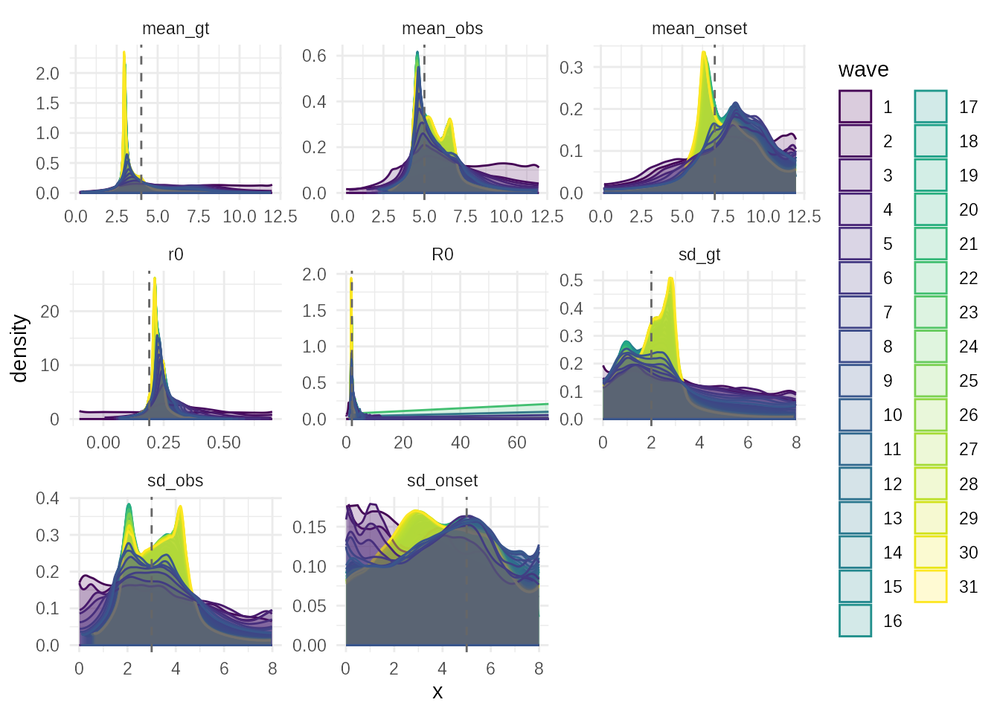
A correlation plot accounting for weighting reveals correlations
between parameters in the final posterior (e.g., r0 and
mean_gt are often correlated).
plot_correlations(adaptive_fit,truth = sim_params) & ggplot2::theme(
axis.title.y = ggplot2::element_text(angle=45,vjust=0, hjust=1),
axis.title.x = ggplot2::element_text(angle=45, hjust=1) #,vjust=1, hjust=0.5)
)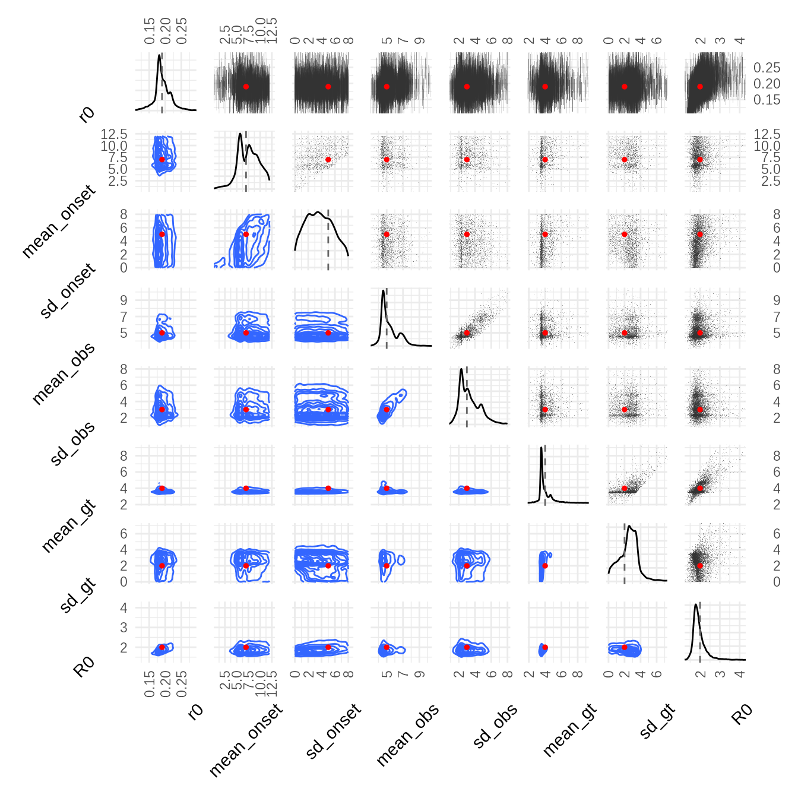
-
plot_convergence(adaptive_fit): The key diagnostic for iterative methods, showing the decline in distance (abs_distance), increase in ESS, and stabilization of parameter estimates (rel_mean_change).
plot_convergence(adaptive_fit)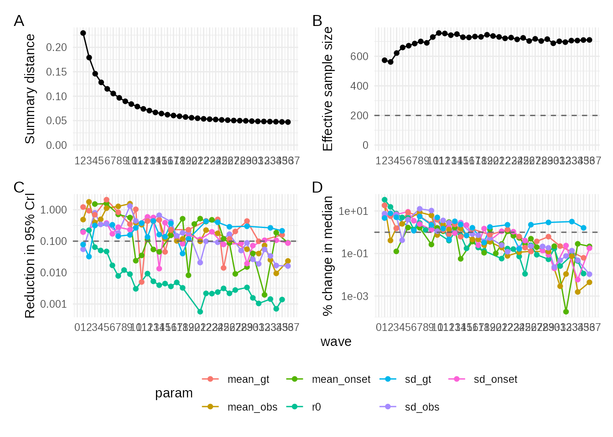
A powerful posterior predictive check. It generates new simulated datasets from the posterior and overlays their summary statistics (histograms) on the observed data. If the model is adequate and the inference successful, the simulated data should closely match the observed data.
plot_simulations(obsdata, adaptive_fit, sim_fn = sim1_fn)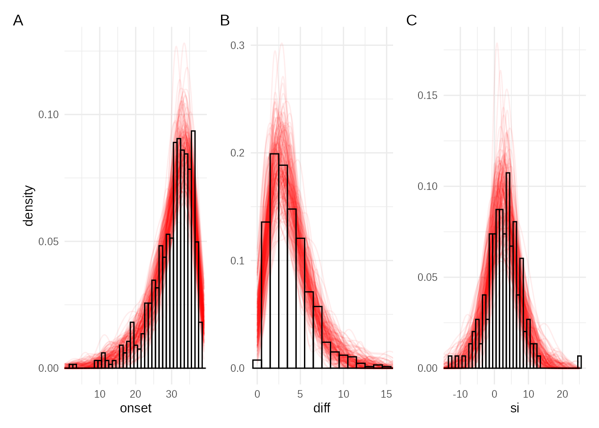
Refining the Priors
With the knowledge that the onset distribution is not informed by the
model. We imagine that we have other data to feed into this model. It is
plausible that we might have independent estimates of symptom onset
delay from traveller or household data. Likewise better estimates of the
observation delay may be available elsewhere. We replace the uniform
priors on the delay parameters with more informative log-normal
priors (lnorm2) that reflect our prior belief
about their likely scale.
Using the output of previous runs we also given more informed priors for the parameters under investigation.
priors2 = priors(
r0 ~ norm(0.2, 0.1),
mean_onset ~ lnorm2(7, 2),
sd_onset ~ lnorm2(5, 1),
mean_obs ~ lnorm2(5, 1),
sd_obs ~ lnorm2(3, 1),
mean_gt ~ lnorm2(4, 3),
sd_gt ~ lnorm2(3, 2),
R0 ~ (1+r0*sd_gt^2/mean_gt) ^ (mean_gt^2 / sd_gt^2),
~ is.finite(R0) & R0 > 0,
~ mean_onset > sd_onset,
~ mean_obs > sd_obs,
~ mean_gt > sd_gt
)
priors2## Parameters:
## * r0: norm(mean = 0.2, sd = 0.1)
## * mean_onset: lnorm2(mean = 7, sd = 2)
## * sd_onset: lnorm2(mean = 5, sd = 1)
## * mean_obs: lnorm2(mean = 5, sd = 1)
## * sd_obs: lnorm2(mean = 3, sd = 1)
## * mean_gt: lnorm2(mean = 4, sd = 3)
## * sd_gt: lnorm2(mean = 3, sd = 2)
## Constraints:
## * is.finite(R0) & R0 > 0
## * mean_onset > sd_onset
## * mean_obs > sd_obs
## * mean_gt > sd_gt
## Derived values:
## * R0 = (1 + r0 * sd_gt^2/mean_gt)^(mean_gt^2/sd_gt^2)We run the Adaptive ABC again with these new priors and compare the
results. This allows us to assess the robustness of our inferences to
prior specification. We also want to focus the algorithm on the elements
of the data that are unknown, by modifying the
scoreweights. We also let the algorithm converge hard as we
are relatively sure where we are investigating and trying to twist it
away from a relaxed state.
scoreweights2 = scoreweights1 *
c(sim_onset = 2, sim_diff = 0.5, sim_si = 2, sim_mad_si = 3)
adaptive_fit2 = abc_adaptive(
obsdata = obsdata,
priors_list = priors2,
sim_fn = sim1_fn,
scorer_fn = scorer1_fn,
n_sims = 4000,
acceptance_rate = 0.2,
# debug_errors = TRUE,
parallel = TRUE,
scoreweights = scoreweights2,
widen_by = 1.05
)## ABC-Adaptive## Adaptive waves: ■ 0% | wave 1 ETA: 6m## Adaptive waves: ■ 1% | wave 2 ETA: 5m## Adaptive waves: ■ 2% | wave 4 ETA: 5m## Adaptive waves: ■■ 2% | wave 6 ETA: 5m## Converged on wave: 8## Adaptive waves: ■■ 3% | wave 7 ETA: 6m
summary(adaptive_fit2)## ABC adaptive fit: 8 waves - (converged)
## Parameter estimates:
## # A tibble: 8 × 4
## # Groups: param [8]
## param mean_sd median_95_CrI ESS
## <chr> <chr> <chr> <dbl>
## 1 R0 1.783 ± 0.265 1.741 [1.416 — 2.336] 4242.
## 2 mean_gt 3.266 ± 0.608 3.211 [1.747 — 5.575] 4242.
## 3 mean_obs 4.777 ± 0.712 4.769 [3.453 — 6.480] 4242.
## 4 mean_onset 7.083 ± 1.422 6.827 [4.613 — 10.615] 4242.
## 5 r0 0.194 ± 0.029 0.192 [0.124 — 0.293] 4242.
## 6 sd_gt 1.931 ± 0.721 1.915 [0.698 — 4.135] 4242.
## 7 sd_obs 2.765 ± 0.734 2.748 [1.497 — 4.446] 4242.
## 8 sd_onset 4.772 ± 0.819 4.778 [3.287 — 6.535] 4242.
plot(adaptive_fit2,truth = sim_params, tail = 0.01)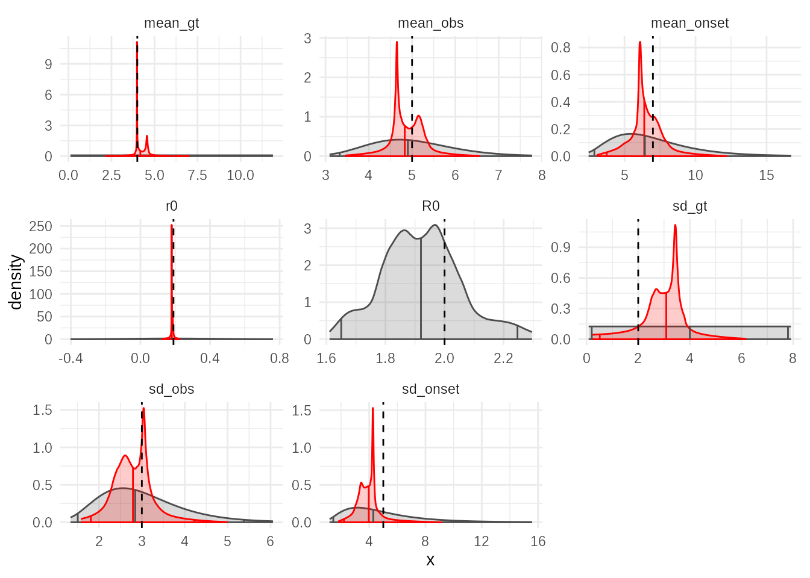
And we can check that posterior resamples from the new fit are still consistent with the data.
plot_simulations(obsdata, adaptive_fit2, sim_fn = sim1_fn)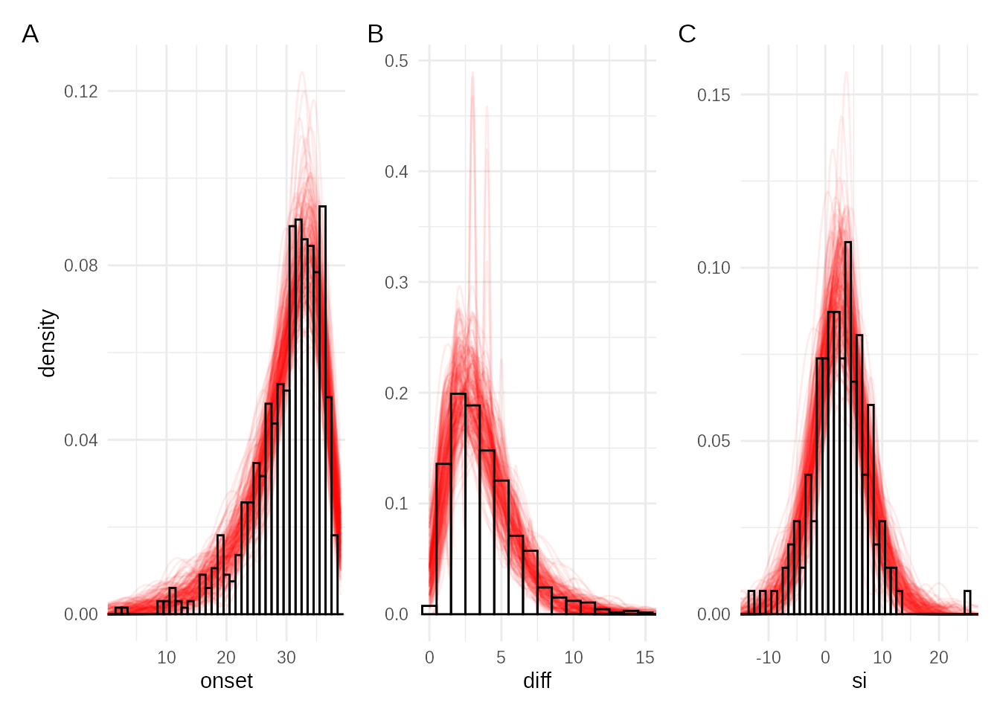
Conclusion
This vignette showcases the power of tidyabc for
tackling complex, real-world inference problems in epidemiology.
Including this tricky example where relatively short generation time is
coupled with long delay to symptom onset. By building a detailed
simulation model that captures the hidden processes of transmission and
observation, and by carefully designing the scoring function and priors,
we can use ABC to infer critical but unobservable parameters like R0 and
the generation time from limited, biased observational data. The suite
of diagnostic plots provided by tidyabc allows for thorough
evaluation of the inference quality and model adequacy.
When working with a real problem developing a simulation first and checking that the ABC machinery is able to recover the simulation parameters is a very important aspect to fitting with ABC where there are quite a lot of variables in the fitting process that all may influence the overall quality of fit.